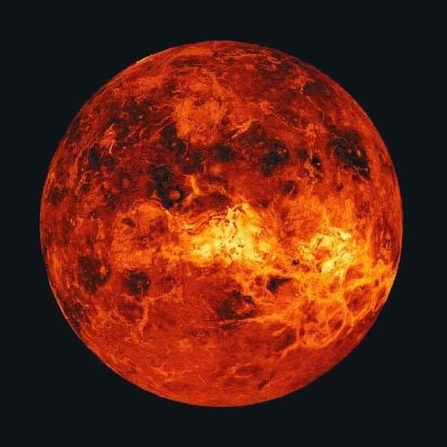
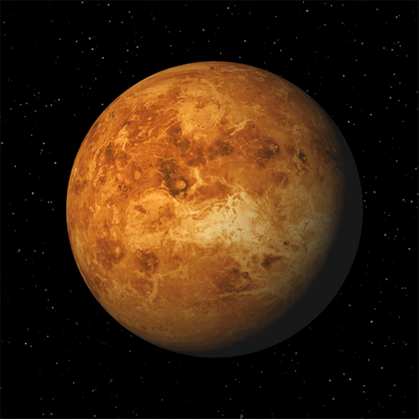

Venus

- Venus, se roteste 243 de zile in jurul axei sale.
- Se invarte în jurul Soarelui in 224.7 zile.
- Temperatura medie: 480 ° C.
- Diametrul planetei este de 12,104 km, iar gravitia: 0,9 x din cea de pe Pamant.
- Prezinta un nivel ridicat de dioxid de carbon (CO2) in atmosfera.
- Nu are luni sau inele.
- A fost vizitata de Pioneer, Venera, Magellan, Galileo, si câteva alte sonde spatiale.

Venus este a doua planeta ca distanta fata de Soare în sistemul nostru solar. Situata la 108 milioane km de Soare, Venus îsi parcurge orbita în 224,7 de zile. Rotatia în jurul propriei sale axe este foarte lenta, dureaza 243 de zile si are loc de la vest la est, în sens invers fata de rotatia celorlalte planete. Cu un diametru de 12.100 km, Venus este, ca pozitie, a doua planeta (pornind de la Soare) din sistemul solar, orbita sa fiind cuprinsa între cea a planetelor Mercur si Pamânt. Venus este cu foarte putin mai mica decât Pamântul, dar atmosfera sa este foarte diferita: în principal, aceasta este compusa din 96 % gaz carbonic si 3,5 % azot. Ea este înconjurata de un val gros de nori repartizati în trei straturi situate la o altitudine între 50 si 70 km. Unii dintre acestia provoaca ploi de acid sulfuric, o substanta chimica foarte agresiva chimic. Pe Venus temperatura este foarte ridicata.